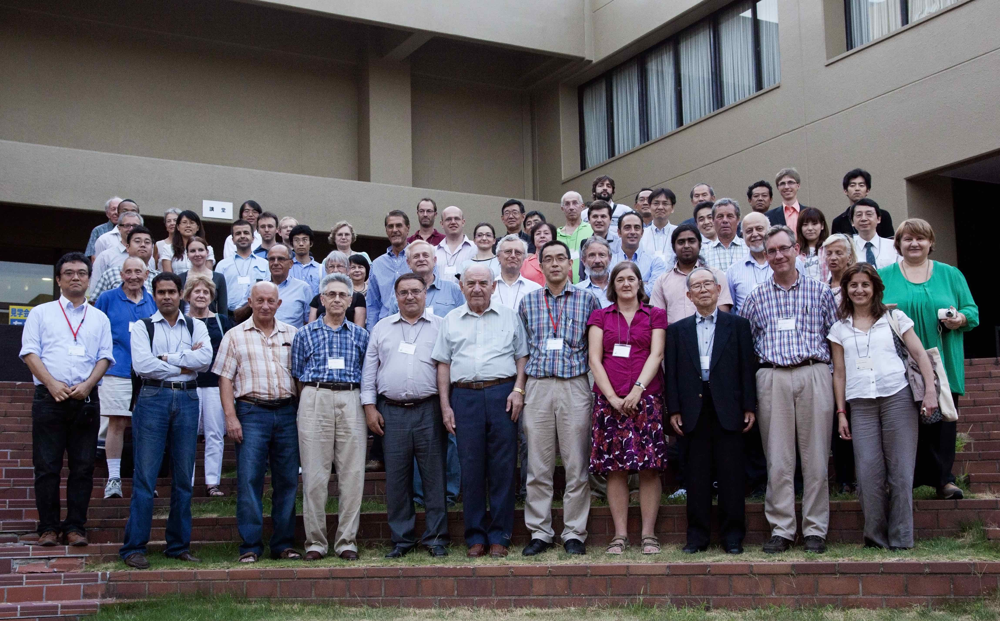

JT2012
Homepage
［2021.08.14］updated
Poster
Program
Vedio at Banquet by A. Müller
Proceedings
JT Symposia (since 1976). Click lower left corner tag in the linked page
This is the homepage of JT2012 held in Tsukuba, 26-31 August, 2012.
